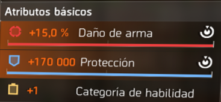

Iniciando análisis visual… ••• Atributos principales detectados en el equipo escaneado.
Cada pieza de equipo contiene uno de estos tres atributos principales. Determinan tu estilo de combate y tu capacidad de supervivencia.
Aumenta tu capacidad ofensiva. Ideal para neutralizar amenazas rápidamente.
Incrementa tu armadura y resistencia. Esencial si recibes mucho daño.
Potencia tus habilidades y herramientas tácticas. Su efecto crecerá a medida que avances.
Iniciando módulo… ••• Advertencia: los valores pueden variar según la calidad del equipo escaneado.
Los atributos secundarios complementan tu Atributo Principal. Pueden mejorar tu daño, tu resistencia o la eficacia de tus habilidades. Elegirlos correctamente puede marcar la diferencia entre sobrevivir… o no.
Optimiza tu capacidad de infligir daño. Recomendados si buscas eliminar amenazas rápidamente.
Mejoran tu capacidad de resistir daño y mantenerte con vida en situaciones críticas.
Potencian tus habilidades tácticas, aumentando su daño, duración o utilidad.
ISAC recomienda: combina atributos secundarios con tu Atributo Principal para maximizar tu rendimiento. Señal… inestable. Módulo completado.
Procesando información avanzada… ••• Se han detectado atributos adicionales presentes únicamente en equipo con nombre o piezas específicas.
Estos atributos no forman parte de los 12 atributos secundarios estándar, pero pueden modificar tu rendimiento de manera significativa según tu estilo de combate.
Aumenta el daño que infliges a la armadura del enemigo. Este atributo es altamente buscado debido a su eficacia contra enemigos blindados. En el meta actual, su valor táctico es considerable.
Incrementa la probabilidad de que los enemigos te detecten y te ataquen. Útil para jugadores que desean atraer fuego enemigo o controlar la atención de los hostiles.
Reduce la probabilidad de que los enemigos se enfoquen en ti. Ideal para configuraciones más sigilosas o para jugadores que necesitan evitar recibir daño directo.
Nota del sistema: estos atributos se han observado en múltiples actualizaciones del juego y su disponibilidad depende del tipo de equipo escaneado. Señal… inestable.
Analizando configuraciones de equipo… ••• Se han identificado patrones comunes utilizados por agentes y civiles en el campo.
La distribución de atributos principales determina el tipo de build que utilizas y define tu rol en combate. A continuación se detallan las configuraciones más comunes.
También conocida como build atacante. Se basa en maximizar el daño de armas para eliminar amenazas rápidamente. Ideal para jugadores que priorizan ofensiva sobre defensa.
Configuración centrada en la supervivencia. Aumenta la armadura, resistencias y regeneración. Recomendada para quienes deben absorber daño o mantener la línea frontal.
Optimizada para maximizar el daño, duración o utilidad de habilidades. Ideal para roles de soporte, control de área o daño basado en dispositivos.
Mezcla de atributos rojos, azules y amarillos. Ofrece versatilidad, permitiendo equilibrar daño, defensa y habilidades. Muy útil para jugadores que buscan adaptarse a múltiples situaciones.
Nota del sistema: estas clasificaciones se basan en observaciones de campo y en la experiencia acumulada por agentes durante múltiples actualizaciones del sistema. Señal… inestable.